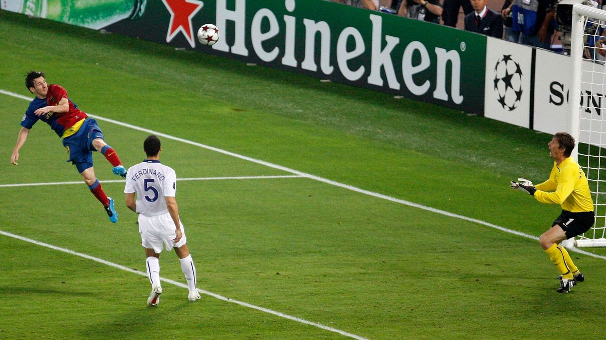

Voetbal is een populair balspel in de wereld, waarbij twee teams elk 11 spelers hebben en moeten proberen de bal in het doel van de tegenstander te krijgen. Elk deel van het lichaam kan worden gebruikt om de bal te spelen, behalve de armen en handen (behalve de inworp). In de praktijk wordt er vooral met voeten en hoofd gespeeld. De bal moet ook te allen tijde bespeelbaar blijven en mag niet worden gevangen door bijvoorbeeld op de bal te gaan liggen of tussen de benen te klemmen. Deze beperkingen gelden niet voor keepers in hun strafschopgebied, ook wel keepers genoemd. Om in het gewone spel goed te presteren op het gras, dragen de spelers voetbalschoenen. 
Het sportveld (meestal een voetbalveld of voetbalveld genoemd) is rechthoekig en moet minimaal 90 meter lang en 120 meter lang zijn, afhankelijk van het spel. De minimale breedte is 45 meter en de maximale is 90 meter. Bij internationale wedstrijden: de lengte ligt tussen de 100 en 110 meter en de breedte tussen de 64 en 75 meter. De kleinste maat die de KNVB hanteert is 100 x 64 meter en de grootste maat is 105 x 69 meter. De scheidingslijn wordt gecompleteerd met een lijn tot 12 cm breed en de hoekvlag wordt op de hoek geplaatst. Het doel moet in het midden van de achterlijn worden geplaatst. De bal is bolvormig Volgens de voorschriften van de International Football Association (FIFA) moet de officiële wedstrijdbal een omtrek hebben van minimaal 68 cm, maximaal 70 cm en een massa van 396 tot 450 gram. Aan het begin van het spel moet het gewicht van de bal tussen de 410 en 450 gram zijn. [1] De bal moet gemaakt zijn van leer of ander geschikt materiaal en moet worden opgeblazen tot een overdruk van 0,6 tot 1,1 atmosfeer (600 tot 1100 g/cm²) op zeeniveau. Het doel is 7,32 meter breed en 2,44 meter hoog. Het is gemaakt van hout of aluminium, met een open voorkant en een net dat aan de achterkant hangt. De duur van een wedstrijd is 2 keer 45 minuten (plus eventuele extra tijd, ook wel blessuretijd genoemd, enkele minuten), met een pauze van 15 minuten. Als er na 90 minuten nog steeds een gelijke stand is en er een winnaar nodig is, worden er twee verlengingen van 15 minuten gespeeld.